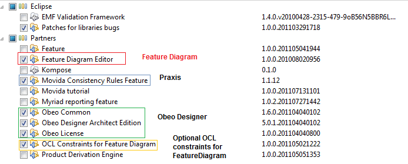
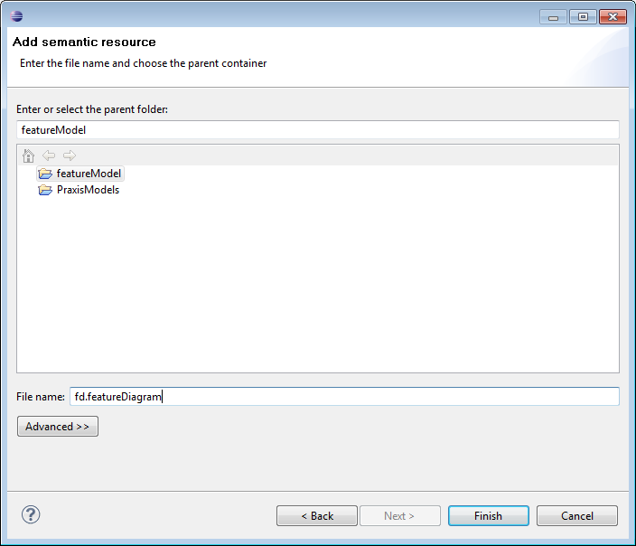
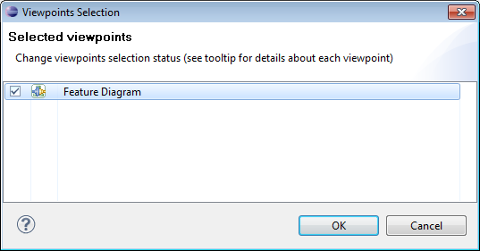
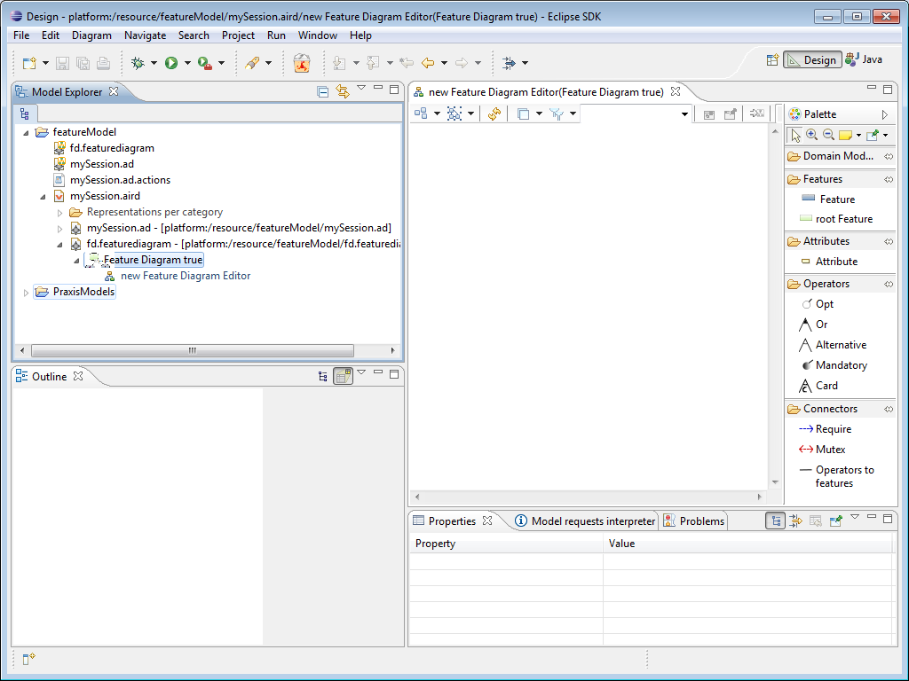
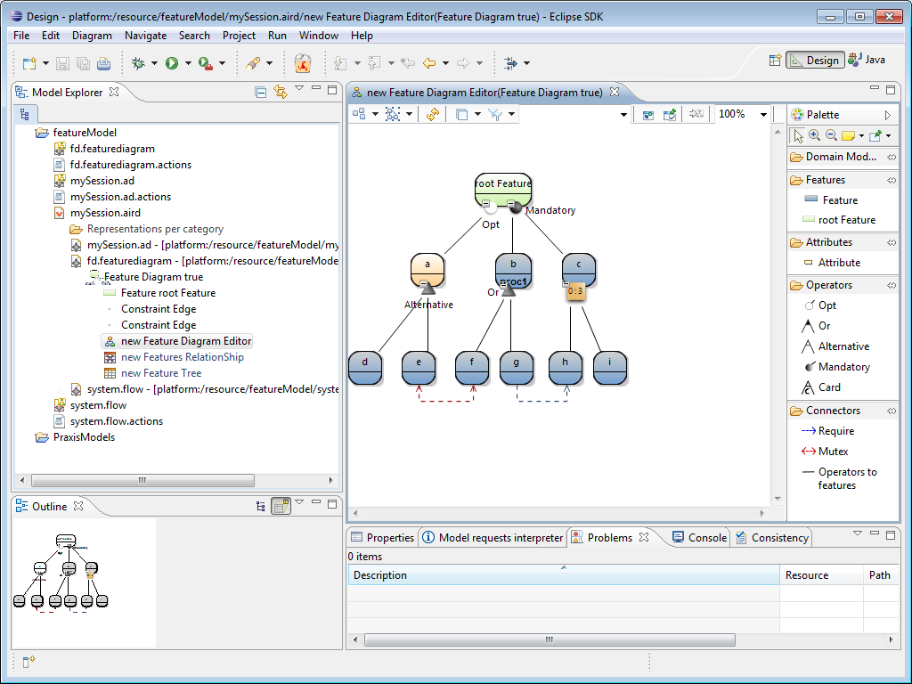

Build date: 17-October-2011
Abstract
This documentation presents the use of the feature diagram editor to create feature diagrams that respect some constraints. This feature diagram editor takes part of the ANR Project Movida.
Table of Contents
- Preface
- 1. Feature Diagram Editor Overview
- 2. Installation
- 3. Feature Diagram Editor : Quick presentation
- 4. Conclusion
Feature models are a way to add variability on models. By variability, we mean to model common and variable parts of a given architecture. An example of use of variability is given by Software Product Line (SPL) which consists in derive different family of products according to their similarities and differences. Another use is to model different software architecture possible choices. A sample for the feature diagram editor details this aspect. This document present quickly how to install and use the feature diagram editor with a sample wink video. For more information about this editor please refer to the technical documentation.
Many notations exist for feature diagram. The notation used on this feature diagram editor to take into account different needs appears on the different notations. So, features can be linked each other with Mandatory (And), Alternative (Xor) , Or, Cardinality and Optional operators. For technical reasons, the graphical notation for this feature diagram editor is simplified. This tool separate modeling of architecture and modeling of feature diagram that describes the variability of this architecture. However, this tool permits to add Domain Model Elements into the features in the Feature Diagram model. The next section will present the installation of the Feature Diagram Editor, a quickly presentation of use and a sample wink video.
Before installing new Eclipse plugin, you need to install SWI-Prolog on your computer. The current version used is the 5.8.3. The next sections can be used only if you do not have a full complete eclipse with the Movida projects such as Movida studio. In this case simply open your Eclipse.
Open your Eclipse and go to Help -> Install New Software. Before adding the Movida studio update site we need to add the MofScript update site which is used by Praxis.
On the new wizard, click on Add and then fill name as MofScript and location as http://download.eclipse.org/modeling/gmt/mofscript/update/ as in the following figure :

Check MofScript on the next wizard, click on Newt on all the following wizards, accept the license and click on Finish. Then click on Restart Now.
When the Eclipse is started again, go again to Help -> Install New Software and click on Add. Name your new update site Movida update site and search the zipped update site movida_update-5.0.zip through the Archive button .
Check the features as in the following figure :

Click on Next on all of the following wizard, accept the license ansd click on Finish. You also need to restart your Eclipse.
To install the Feature Diagram Editor you need to have an Eclipse with Obeo Designer and the Praxis Constraints installed :
Install Acceleo update site
Install Obeo Designer Architect update site
Install the license for Obeo Designer (it is a commercial product)
Install Mofscript update site : http://download.eclipse.org/modeling/gmt/mofscript/update/
Then install Praxis update site
To install the Feature Diagram editor unzip the update site , open Eclipse and go to Help -> Install New Software. On the new wizard, click on Add name your new update site Feature Diagram Editor and search the zipped update site fr.inria.featureDiagramEditorOD6.updatesite .
This chapter present a very quick of use of Feature Diagram Editor. For more information please refer to the sample wink video.
Our editor needs the use of the Design perspective like in Obeo Designer to create or use a Domain Specific Language (DSL). So, go to Window-> Open Perspective -> Other -> Design. A new view Model Explorer appears.
To create a new feature model , you can create a new viewpoint project in the Model Explorer view (File -> New ->Other -> General -> Project. Call it featureModel.
Then, create a new Session (File -> New -> Other-> Viewpoint -> Representation File) .

Click on Next and check empty file.
You obtain a wizard as in the following figure :
Click on Finish.
Then, your Eclipse 's view looks like this:

![[Important]](gfx/admonitions/important.gif) | Session need to be opened |
|---|---|
Here session is opened. To open a closed session simply double click on the .aird file in the Model Explorer view. |
Next, right click on the session (here mySession.aird ) -> Add Model . You obtain the following wizard :

You can choose a EMF feature diagram model ever created with the feature diagram EMF editor proposed with this graphical editor or create a new EMF model selecting Create resource, Next and http://www.kermeta.org/featureDiagram as metamodel URI as shown in the following figure.

Select FeatureDiagram as Model Object as shown on the following figure :

Now, you can choose the name of your new feature model, on the following figure it is fd.featurediagram :

| Use .featurediagram extension |
|---|---|
Do no forget to give the extension .featurediagram to the new EMF file created by this way. Otherwise, you could not use the Praxis contraints associated to this feature diagram editor on it. |
Click on Finish. A new wizard appears as in the following figure, select the viewpoint Design on it.

Then click on the little arrow at the left of the session file (.aird) in the Model Explorer view. You obtain the following figure :
Right click on Feature Diagram true selected in the wizard above, New Representation -> new Feature Diagram Editor.
Double click on new Feature Diagram Editor, you obtain a graphical editor as in the following figure :

To add graphical element on the feature diagram simply click on the desired tool on drag and drop it in the feature diagram. The following figure presents the feature diagram editor.
Now, we present the elements that we can see on the palette :
Root feature : in case of features model as a tree (boolean graphStyleTree at true on FeatureDiagram element) , this feature is the top node parent of any other features.
Feature : a simple feature. Features are used to represent different alternatives.
Attribute : an attribute (with a name, a value and a type) can be added into Features adding information.
Opt : the feature children of this operator are optional. in term of choices of alternatives. The optional features ( like feature a of the example) are colored in orange.
Or : this operator means that at least on of its features must be chosen.
Alternative : (Xor) this operator means that only one feature must be chosen between its features. It corresponds to the "Xor" operator in the previous version.
Mandatory : (And) all features contained on this operator must be chosen. This operator corresponds to a"and" operator of the previous version.
Card : this operator permits to choose a given number of features children included between a lower bound (cardinality minimum) and a upper bound (cardinality maximum).
Require : this graphical constraint represents a feature that require another one.
Mutex : this graphical constraint link the features that are mutually exclusive each other. It means that these two features cannot be chosen together.
Operator to features : it is a link that rely operators to their features.
The next section presents how to add domain model element into features.
You can use two different ways to add Domain Model Element into feature. However, in many cases we prefer add Domain Model Elements by Drag and Drop.
A first step before adding Domain Model Elements by Drag and Drop into Feature model is adding Domain model in the session. We suppose to have the following flow model called system.flow in our featureModel project.
To add this model into the session, right click on mySession.aird -> Add Model. Check Add existing resource and click on Finish. Then click on Browse Workspace and search session.flow in the featureModel project.
Your Eclipse seems to be like in the following figure :

To add a Domain Model Element on a given feature (here adding Composite Processor proc1 on feature b), simply click on Composite Processor proc1 and drag it into feature b. You obtain the following figure :

Domain model elements are directly referenced by the features. So, to add Domain model element on a feature, simply right click on the Feature -> Add Domain Model Element -> Add Domain Model Element. A wizard appears. Click on load button to select a domain model element model. The next wizard page permits to select the desired Domain Model elements and add it into the feature.
At the moment, the editor display the metaclass' name of the added object.
The following wizard permits to select any model file based on EMF by clicking on Load and search the file.

Then a second wizard page permits to select a domain model element.

So, the composite processor and the Fan are added directly on the feature.
You obtain the same as the last figure of the section 3.3.1.
You can filter elements you want to display or not in the Outline view. You can hide two elements : attributes and all domain model elements (Model Elements) . To do this, click on the icon outlined in blue, and select elements that you do not want to appear. You can also fold and operator by clicking on the - outlined in red in the following figure.

So, features d and e are hidden and a + is displayed near theAlternative operator to present that it can be unfolded as in the following picture.

So, we have presented how to add Domain Model Element to the features.
The next section shows how to another view on the feature diagram.
Feature Diagram Editor not contains not only a graphical representation, it also contains a tree and relationship representation (used to define what features are linked with a given mutex or require).
Fpr this part, we have added a require constraint (in blue) and a mutex constraint (in red) :
To create respectively a tree and relationship representation, right click on the Feature Diagram true (selected in the figure above) -> New Representation -> new Feature Tree (respectively new Feature Relationship).
You obtain the following in your Eclipse :

Double click on new Feature Tree. You obtain the following representation in your Eclipse :

Double click on new Feature RelationShip. You obtain the following representation in your Eclipse :

We found here a require between g and h and a mutex between e and f.
We have presented all Feature Diagram Editor Representations.The next section shows how to check Praxis constraints on the feature model.
To check the Praxis constraints written for feature diagram go to the Project Explorer view and right click on the EMF model contained by the session (file .aird) , -> Praxis-> Activate Consistency Management. We have added a second feature called "a" and the error is explained on the Eclipse Problem view. In our case two features cannot have the same name.
If you have installed the OCL constraints, you can also retrieve this error with these constraints as presented in the following section.
If you have installed the OCL constraints, you need to check before if the constraints are enabled going on Window-> Preferences -> Model Validation -> Constraints as in the following figure :

All constraints should be checked. Then, click on the graphical feature diagram and go the the Eclipse menu bar -> Diagram -> Validate. You obtain a red decorator on the error as in nthe following figure :

The two first errors in the Problem view are for the OCL constraiints and the third is the error detected by Praxis.
This document made a quick tour of the Feature Diagram Editor functionalities. For more details please refer to the wink video . An example is also available on fr.inria.featureDiagramEditor.praxisConstraints.tests (which is the contraints test project). To retrieve this project go to File-> New -> Example -> Feature Diagram Editor Sample -> Feature Diagram Editor Test Constraints. Then you can click on the session files (.aird) and open it. If it does not work, select ViewPoint Selection and click on Design. Then you can test the Praxis Constraints as shown in the section Check Praxis Constraints .